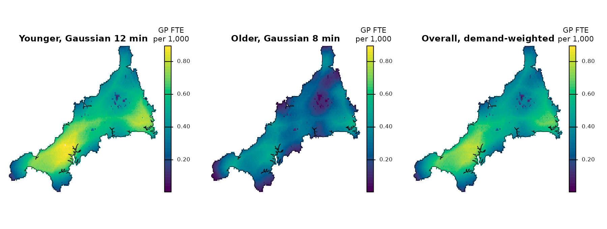

A floating catchment area (FCA) index measures access as supply per
resident. Each facility divides its supply, here GP full-time
equivalents (FTE), by the demand it can reach, here residents. Each
place then adds up the ratios of the facilities it can reach. Weights
that fall with travel time decide what “can reach” means, and the FCA
methods differ in those weights. This guide computes five indices on the
same inputs, maps them on one color scale and shows how much of the GP
supply each one hands back to residents. By the end you can choose an
index and say what changes when you switch. The inputs are the mainland
grids of The Cornwall GP example data.
The spax() interface and the allocation model are
experimental and may change in later versions.
The inputs
The setup code shared by every grid guide, explained in The Cornwall GP example data, reads the
population grid (residents per grid cell), the mainland practices with
their GP FTE excluding GPs in training, and the travel stack: one raster
layer of travel minutes per practice. prep_data() holds
them together for spax().
gp <- cornwall_gp |>
filter(!scilly) |>
st_drop_geometry()
pop <- read_spax_example("cornwall_pop.tif")
travel_grid <- read_spax_example("cornwall_gp_travel.tif")[[gp$practice]]
# Keep cells with a travel time to every mainland practice
pop <- trim(mask(pop, sum(travel_grid)))
travel_grid <- crop(travel_grid, pop)
grid_data <- prep_data(pop, gp, travel_grid, id_col = "practice", supply_cols = "gp_fte_extg")
grid_data<spax data> raster 117 x 187 cells x 54 facilities; supply gp_fte_extg
demand 1 layer; travel 54 layers
note holds terra rasters: prepare the data again after saveRDS()The print gives the grid size, the 54 practices and the supply
column. Its note means that a saved grid_data cannot be
reused: run prep_data() again after loading. The grid has
6,912 populated cells holding 541,184 residents, and the practices hold
311.3 GP FTE: 0.58 GP FTE per 1,000 residents across the mainland.
Three ways to weight travel
The first three methods are the original two-step FCA (2SFCA), the enhanced two-step FCA (E2SFCA) and the modified two-step FCA (M2SFCA). Each gathers demand to practices with one set of weights, divides each practice’s supply by the demand it gathered, and spreads those ratios back to cells with a second set of weights.
Each method needs a rule for how much a practice counts at a given travel time. A Gaussian decay is a bell-shaped weight: 1 at zero minutes, falling smoothly as travel time grows. Its travel scale σ, in minutes, sets how fast it falls: with σ = 10, a practice 10 minutes away keeps 61% of its weight and one 20 minutes away 14%. The 15-minute catchment and σ = 10 minutes are choices for this guide.
| Method | Weights when gathering demand | Weights when spreading ratios |
|---|---|---|
| 2SFCA | 1 within 15 minutes, 0 beyond | The same |
| E2SFCA | Gaussian decay, travel scale 10 minutes | The same |
| M2SFCA | Gaussian decay, travel scale 10 minutes | The Gaussian weight squared |
You describe each index with a spec_*() function, which
records the method and its settings but no data. spax()
then runs it on the prepared data. spec_2sfca() takes the
catchment as threshold. The other specifications take a
decay: decay_gaussian() here, or
decay_exponential(), decay_power(),
decay_step() (a binary catchment) and
decay_inverse().
gaussian_10 <- decay_gaussian(sigma = 10)
twosfca <- spax(grid_data, spec_2sfca(threshold = 15))
e2sfca <- spax(grid_data, spec_e2sfca(decay = gaussian_10))
m2sfca <- spax(grid_data, spec_m2sfca(decay = gaussian_10))
e2sfca<spax access> E2SFCA, 1 layer on 117 x 187 cells
Spatial Properties:
- Resolution: 0.00833333 x 0.00833333
- Dimensions: 117 x 187
Measures: 1
- gp_fte_extg
Facilities: 54
Parameters:
- Decay function: gaussian (sigma = 10)
- Demand normalization: identity The print names the method, the grid, the 54 practices and the decay.
The index itself is the raster e2sfca$accessibility, in GP
FTE per resident, so the maps multiply it by 1,000. Step 2 of Inside the E2SFCA calculation explains the
print’s last line, the demand normalization.
The maps show the three surfaces in GP FTE per 1,000 residents on one color scale.
# Stack the three surfaces and draw them on one shared color scale
all_three <- 1000 * c(
e2sfca$accessibility,
twosfca$accessibility,
m2sfca$accessibility
)
names(all_three) <- c(
"E2SFCA, Gaussian 10 min",
"2SFCA, 15 min",
"M2SFCA, Gaussian 10 min"
)
shared_range <- range(values(all_three), na.rm = TRUE)
# Mainland Cornwall's outline, in the grid's longitude and latitude
outline <- cornwall_lsoa |>
filter(!scilly) |>
st_union() |>
vect()
plot(
all_three,
nc = 3,
axes = FALSE,
col = hcl.colors(50, "viridis"),
range = shared_range,
mar = c(1, 1, 2, 5),
plg = list(title = "GP FTE\nper 1,000"),
fun = function() lines(outline, lwd = 0.5)
)
E2SFCA changes smoothly. It is highest in the west, between Redruth, Truro and Falmouth, and lowest on Bodmin Moor, the upland north-east of the map’s center. 2SFCA is patchy, with sharp edges where the 15-minute catchments end, and its highest patches lie in the west and at the eastern edge near Callington. M2SFCA has the E2SFCA pattern but is darker everywhere, for a reason the next section shows.
Compare the values
The table gives three cell quantiles and the index of the average resident, for each method, in GP FTE per 1,000 residents.
# Residents per cell, and each index per 1,000 residents, as plain vectors
residents <- values(pop, mat = FALSE)
per_1000 <- function(result) 1000 * values(result$accessibility, mat = FALSE)
e2sfca_values <- per_1000(e2sfca)
twosfca_values <- per_1000(twosfca)
m2sfca_values <- per_1000(m2sfca)
# Cell quantiles and the index of the average resident
describe <- function(index) {
c(
quantile(index, c(0.05, 0.5, 0.95), na.rm = TRUE),
resident_weighted = weighted.mean(index, residents, na.rm = TRUE)
)
}
round(
rbind(
E2SFCA = describe(e2sfca_values),
`2SFCA` = describe(twosfca_values),
M2SFCA = describe(m2sfca_values)
),
2
) 5% 50% 95% resident_weighted
E2SFCA 0.24 0.49 0.73 0.58
2SFCA 0.24 0.50 0.88 0.58
M2SFCA 0.08 0.28 0.45 0.35The quantiles describe grid cells, and most cells are rural. The resident-weighted column answers a different question: what does the average resident see? For E2SFCA and 2SFCA it equals the mainland ratio of 0.58 GP FTE per 1,000 residents. Each uses the same weights in both steps and every practice gathers some demand, so the two indices move supply between places without adding or losing any. M2SFCA gives the average resident 0.35. Its squared weights are smaller than the weights that gathered the demand, so part of the supply goes back to no one, and cells whose practices are far away lose the most.
Correlations across cells show how far the surfaces agree on where access is higher. The second output counts the residents with no practice within 15 minutes. 2SFCA gives them an index of zero.
# Correlation of E2SFCA with the other two, across cells
round(
c(
with_2sfca = cor(e2sfca_values, twosfca_values, use = "complete.obs"),
with_m2sfca = cor(e2sfca_values, m2sfca_values, use = "complete.obs")
),
2
) with_2sfca with_m2sfca
0.79 0.90
# Residents with no practice within 15 minutes
round(sum(residents[twosfca_values == 0], na.rm = TRUE))[1] 720The three surfaces broadly agree: E2SFCA correlates at 0.79 with 2SFCA and at 0.90 with M2SFCA. 2SFCA has sharp steps at the 15-minute edges, a longer upper tail and 720 residents at zero. The decay versions change gradually instead. The catchment and the travel scale are choices, so it is worth repeating a comparison like this one with the values you plan to use. Reading results says what an FCA index measures.
Selection weights: 3SFCA and Huff-2SFCA
In the three methods above, the weights of all practices at one cell can add up to more than 1: where many practices are close, each of them counts the same residents. Two further methods, the three-step FCA (3SFCA) and Huff-2SFCA, first share each cell’s demand among the practices. At each cell, the selection weight of a practice is its share of the cell’s weights, as the table defines, so the selection weights at a cell add up to 1. Both steps then use the decay weight times the selection weight.
| Method | Selection weight of a practice at a cell | Weights in both steps |
|---|---|---|
| 3SFCA | Its Gaussian weight, divided by the sum of these weights over the cell’s practices | Decay weight × selection weight |
| Huff-2SFCA | Its Gaussian weight times its GP FTE, divided by the sum of these products over the cell’s practices | Decay weight × selection weight |
Huff-2SFCA is named after the Huff model of where shoppers go, in
which a larger, nearer facility draws a larger share. Its selection
weights multiply each practice’s decay weight by its attractiveness, by
default its GP FTE (alpha = 1 is the power on GP FTE). To
fit the Huff model itself to observed registrations, see Where do residents register?.
Both run like the others.
sfca3 <- spax(grid_data, spec_3sfca(decay = gaussian_10))
huff2sfca <- spax(grid_data, spec_huff2sfca(decay = gaussian_10))The maps put E2SFCA, 3SFCA and Huff-2SFCA on the color scale of the first map, in GP FTE per 1,000 residents.
selection_maps <- 1000 * c(
e2sfca$accessibility,
sfca3$accessibility,
huff2sfca$accessibility
)
names(selection_maps) <- c(
"E2SFCA, Gaussian 10 min",
"3SFCA, Gaussian 10 min",
"Huff-2SFCA, Gaussian 10 min"
)
plot(
selection_maps,
nc = 3,
axes = FALSE,
col = hcl.colors(50, "viridis"),
range = shared_range,
mar = c(1, 1, 2, 5),
plg = list(title = "GP FTE\nper 1,000"),
fun = function() lines(outline, lwd = 0.5)
)
The same summaries as before compare the three.
sfca3_values <- per_1000(sfca3)
huff2sfca_values <- per_1000(huff2sfca)
# Cell quantiles and the resident-weighted index
round(
rbind(
E2SFCA = describe(e2sfca_values),
`3SFCA` = describe(sfca3_values),
`Huff-2SFCA` = describe(huff2sfca_values)
),
2
) 5% 50% 95% resident_weighted
E2SFCA 0.24 0.49 0.73 0.58
3SFCA 0.25 0.51 0.70 0.58
Huff-2SFCA 0.25 0.52 0.72 0.58
# Correlations across cells
round(
c(
`E2SFCA, 3SFCA` = cor(e2sfca_values, sfca3_values, use = "complete.obs"),
`E2SFCA, Huff-2SFCA` = cor(e2sfca_values, huff2sfca_values, use = "complete.obs"),
`3SFCA, Huff-2SFCA` = cor(sfca3_values, huff2sfca_values, use = "complete.obs")
),
2
) E2SFCA, 3SFCA E2SFCA, Huff-2SFCA 3SFCA, Huff-2SFCA
0.64 0.55 0.97 The resident-weighted index is the same for the three. They differ in which cells the supply is credited to. E2SFCA correlates at 0.64 with 3SFCA, while adding attractiveness to 3SFCA changes the surface less (a correlation of 0.97). On the maps, 3SFCA and Huff-2SFCA are higher than E2SFCA at the southern tip (the Lizard) and the western tip (Land’s End), where E2SFCA is low. All three have their lowest values on Bodmin Moor.
With alpha = 0, attractiveness has no effect and
Huff-2SFCA gives the 3SFCA surface:
no_attractiveness <- spax(grid_data, spec_huff2sfca(decay = gaussian_10, alpha = 0))
all.equal(values(no_attractiveness$accessibility), values(sfca3$accessibility))[1] TRUEselection can give the selection weights another decay,
for example decay_step(30) to share each cell’s demand only
among practices within 30 minutes. ?spec_e2sfca describes
the options, and ?spax_3sfca and
?spax_huff2sfca cite the methods.
How much supply each index hands back
Multiply each cell’s index by its residents and add up over cells: the result is the GP FTE that the index hands back to residents. The table gives it as a percentage of the total GP FTE.
# Residents times index, summed over cells, as a share of total GP FTE
returned <- function(result) {
sum(residents * values(result$accessibility, mat = FALSE), na.rm = TRUE) /
sum(gp$gp_fte_extg)
}
round(
100 * c(
E2SFCA = returned(e2sfca),
`2SFCA` = returned(twosfca),
M2SFCA = returned(m2sfca),
`3SFCA` = returned(sfca3),
`Huff-2SFCA` = returned(huff2sfca)
),
1
) E2SFCA 2SFCA M2SFCA 3SFCA Huff-2SFCA
100.0 100.0 61.6 100.0 100.0 This is the resident-weighted column of the tables above, divided by the mainland ratio. The four indices that use the same weights in both steps hand back all of the GP FTE, and M2SFCA hands back 61.6%.
Choosing an index
- A fixed catchment, such as a 15-minute standard: 2SFCA. Everyone beyond it gets an index of zero.
- Access that fades with travel time: E2SFCA, with a decay and a travel scale you choose. A Gaussian, exponential or power decay can also take a raster of σ values, for a travel scale that varies in space.
- Remoteness counted against a place: M2SFCA. It weights the ratios a second time on the way back, so a cell far from every practice gets a lower index even where those practices are not crowded. Part of the supply goes to no one, so its values are lower than those of E2SFCA.
- Residents near many practices counted at most once: 3SFCA, which shares each cell’s demand among its practices. Huff-2SFCA also gives larger practices a larger share.
- Expected use, fitted to where people register: an allocation model, described in An FCA index or an allocation model?.
A one-call shortcut
Once you have chosen an index, its one-call function computes it
directly from the inputs: spax_2sfca(),
spax_e2sfca(), spax_m2sfca(),
spax_3sfca() or spax_huff2sfca(). The one-call
functions take the travel stack as distance and the decay
as a list in decay_params. They return the same object as
spax(), so the E2SFCA surface is identical.
e2sfca_one_call <- spax_e2sfca(
demand = pop,
supply = gp,
distance = travel_grid,
decay_params = list(method = "gaussian", sigma = 10),
id_col = "practice", # matches supply rows to travel layers
supply_cols = "gp_fte_extg"
)
identical(values(e2sfca_one_call$accessibility), values(e2sfca$accessibility))[1] TRUEThe one-call functions suit a single index. Specifications suit a comparison like this one, where several indices run on the same prepared data.
Several demand groups
Residents can differ in how far they travel, for example by age or by
the transport they have. Give prep_data() the demand as a
named list of single-layer rasters, one per group, and give the
specification one decay per group. Each group then gets its own
surface.
The Cornwall data have no age split, so this section builds one. It assumes that the share of residents in an older group rises in a straight line from 15% at the western edge of the grid to 35% at the eastern edge. It also assumes that the older group travels less far to a practice, with a travel scale of 8 minutes against 12 for the younger group. All of these numbers are illustrative choices. The code builds the two group grids, prepares them, and computes the index with one decay per group.
# An illustrative older share that rises from west to east
older_share <- mask(init(pop, "x"), pop)
x_range <- unlist(global(older_share, range, na.rm = TRUE))
older_share <- 0.15 + 0.20 * (older_share - x_range[1]) / (x_range[2] - x_range[1])
groups <- list(
younger = pop * (1 - older_share),
older = pop * older_share
)
group_data <- prep_data(groups, gp, travel_grid, id_col = "practice", supply_cols = "gp_fte_extg")
# One decay per group, named by the group IDs
by_group <- spax(
group_data,
spec_e2sfca(decay = list(
younger = decay_gaussian(sigma = 12),
older = decay_gaussian(sigma = 8)
))
)
names(by_group$accessibility)[1] "gp_fte_extg.younger" "gp_fte_extg.older" "gp_fte_extg.all" All groups compete for the same GP time. The gathering step adds up
the demand of the groups that reaches each practice, each group with its
own weights, so a practice has one demand total and one supply-to-demand
ratio. The spreading step then gives each group its own surface from
those shared ratios, using its own weights. The layer ending in
.all is the overall surface: the average of the group
surfaces, weighted by each cell’s demand. The maps show the three layers
on one color scale of their own, not the scale of the earlier maps.
group_maps <- 1000 * by_group$accessibility
names(group_maps) <- c(
"Younger, Gaussian 12 min",
"Older, Gaussian 8 min",
"Overall, demand-weighted"
)
plot(
group_maps,
nc = 3,
axes = FALSE,
col = hcl.colors(50, "viridis"),
range = range(values(group_maps), na.rm = TRUE),
mar = c(1, 1, 2, 5),
plg = list(title = "GP FTE\nper 1,000"),
fun = function() lines(outline, lwd = 0.5)
)
The older group’s map is darker everywhere, and the overall map is close to the younger one. The table gives the index of the average resident in each group, and overall.
# Demand-weighted mean index per 1,000 residents of each group, and overall
mean_index <- function(layer, demand) {
index <- 1000 * values(by_group$accessibility[[layer]], mat = FALSE)
weighted.mean(index, values(demand, mat = FALSE), na.rm = TRUE)
}
round(
c(
younger = mean_index("gp_fte_extg.younger", groups$younger),
older = mean_index("gp_fte_extg.older", groups$older),
overall = mean_index("gp_fte_extg.all", pop)
),
2
)younger older overall
0.65 0.36 0.58 The average younger resident sees 0.65 GP FTE per 1,000 residents and the average older resident 0.36. The overall value lies between them, nearer the younger group because that group is the larger one in every cell. With a shorter travel scale, every practice at a positive travel time gets a smaller weight for the older group, so its index is lower. The gap comes from the assumed travel scales and the assumed split.
Transport modes work the same way. Split the residents by mode, for
example by the share of households with a car. Give
prep_data() the demand as a named list by mode, and the
travel as a named list with the same names: one travel stack per mode,
naming the same practices in the same order. This follows the
multi-modal 2SFCA of Tao et al. (2018)
(their equations 3-5), in which the modes share the supply and the
travel times differ by mode, and extends it to a decay that differs by
group. Earlier multi-modal 2SFCA work includes Mao and
Nekorchuk (2013) and Langford, Higgs
and Fry (2016). In a specification, decay and
selection can be a named list by group, and
threshold a named vector by group.
Next
- Inside the E2SFCA calculation: rebuild the index one step at a time, and 3SFCA from the same building blocks.
- Grid resolution and computational cost: how cell size changes the index and the run time.
- An FCA index or an allocation model?: when you need choice probabilities and a fit to observed registrations.
- Reading results: what an FCA index measures, and what it does not.